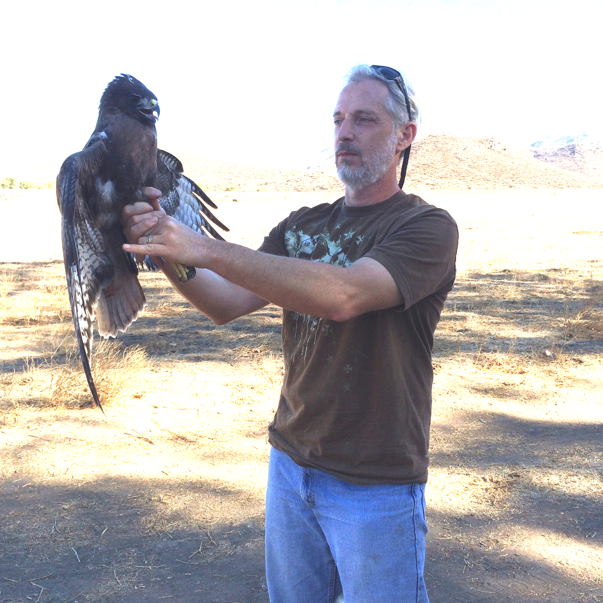

The Cognavitron — hover for details · click to navigate
About
My Story
Everyone has an origin story, and mine is rooted in the soil of the forests and lakes of my youth. E. O. Wilson defined biophilia as an “innate tendency to focus on life and lifelike processes” (Wilson 1984). Whether you call it biophilia, ecological empathy, or simply an innate tendency to connect with living things and natural systems, I have possessed that empathy and curiosity about living things for as long as I can remember.
I am not unusual in this among ecologists and conservationists — most of us can point to early experiences that first opened us to the living world. I grew up in a rural place with the forests and lakes that surrounded our home providing the nutrients my natural tendencies needed to grow. They were also a refuge. If I wasn’t sleeping or doing chores on our farm, it’s a good bet that is where I was.
In retrospect, I grouped my early experiences in nature into a few recurring themes. One theme was about temporal and spatial scale. Hunting for fossils got me thinking about life across deep time, about how things change. Looking at daphnia, cyclops, and fingernail clams through a lens, or lying on my stomach watching worms, insects, and fungi at work under a rotting log, taught me that you could look at nature at any scale — grand or microscopic — and always find something happening. Another theme was about how individuals interacted to form larger systems: watching a gopher dig a burrow, forcing insects and worms to the surface, which a robin then caught and brought to her young, I was getting an intuitive sense of organisms interacting — energy and matter moving between individuals through predation and symbiosis, across forests, lakes, and creeks connected in ways that weren’t always obvious. And some experiences were simply about being connected with nature: eating wild strawberries until we got a stomach ache, sleeping in the woods overnight, falling asleep in meadows, or sitting through thunderstorms in the forest.
Like smaller ocean swells merging into one larger swell, these experiences and the positive associations that came with them grew into something larger — a love for and connection with the biosphere, and a sense of responsibility and reciprocity toward the Earth. On a deeper level, my career has always been about that connection, and about protecting nature so other kids can grow up having these experiences.

I resumed my education in my late twenties, first attending community college to make up some things I had missed in high school, then transferring to UC San Diego. I learned that I could be a very good student, and was particularly surprised to find that I had a natural aptitude for science, math, and coding — things I had not discovered about myself during my K–12 education. I loved universities and the whole academic environment. My love of nature translated naturally into ecology, conservation biology, and landscape ecology.
An undergraduate independent study with Ted Case led to me building a version of Paul Beier’s Santa Ana puma population model. Ted introduced a program to me called Stella Research, which I used to construct models composed of systems of differential equations and numerically solve them. Stella Research came with a booklet that described how to look at systems at different scales, which resonated with my earlier experiences in nature. After that course, Ted asked if I was interested in the integrated bachelor’s-master’s degree program, with him as my advisor. I agreed, and decided to conduct a radio telemetry study of red diamond rattlesnakes — an endemic species about which we knew little regarding habitat use and urbanization impacts. By this time I had taken a course in Java, was using Matlab and Mathematica, and was learning C/C++. In 2000, I attended the NPACI Parallel Computing Institute at SDSC — an early exposure to HPC and parallel programming — while completing my master’s degree in biology at UCSD.
After UCSD, I continued my graduate education at the University of Wisconsin–Madison, where my PhD advisor Kevin Crooks was beginning his career as a professor. Kevin and I shared a common interest in conservation biology, animal behavior, and landscape connectivity. A faculty member in our department, Christine Ribic, noticed a natural talent for quantitative work and suggested I also pursue a Master of Science in Biometry. After meeting with the program chair, Jun Zhu became my advisor. She was a great mentor, and I learned much from her. One result was that I became an early R user in 2001 — as part of my biometry coursework I took a statistical computing course taught by Douglas Bates, one of R’s most important early contributors and the author of lme4 and Matrix, at a time when R 1.0 had just been released.
I followed Kevin to Colorado State University to complete my PhD in Ecology. CSU was a great experience. I joined PRIMES — the Program for Interdisciplinary Mathematics, Ecology, and Statistics — and the Department of Fish, Wildlife, and Conservation Biology had a strong quantitative culture that suited me well. A graduate landscape ecology seminar with Barry Noon and Dave Theobald was excellent; Barry, Dave, and F. Jay Breidt (chair of the Department of Statistics) rounded out my doctoral committee, and Barry would later become my postdoctoral advisor. For my PhD research, I wrote neural network and genetic algorithm models for animal movement in C++ — the computational demands of running agent-based movement models over spatial data required it. I was using neural nets before they were cool. I also organized a graduate seminar on ecological complexity, with the support of Colleen Webb. I continued as a postdoc researcher at CSU for three years, but eventually the Ocean called, and my wife and I decided to return to California.
Shortly after returning, following a brief but successful consulting career and work with the San Diego Management and Monitoring Program (SDMMP), I began a fifteen-year career with USGS — the first nine years at the Western Ecological Research Center (WERC), then with the Advanced Research Computing (ARC) group within USGS Core Science Systems. During those years I also finally discovered freediving, which met my need to connect directly with the living world, proved to be an incredibly healthy practice, and led to many amazing experiences in the Ocean.
In 2025 I resigned from USGS to focus on research and collaborations at the intersection of AI, ecology, and conservation. This website is part of that work — a way of thinking out loud about where conservation science should go, and who it should serve.

Later in life I found that same connection through freediving in the Ocean — exploring kelp forests, encountering marine wildlife, and feeling most like myself underwater in the same way I did on land, in the forests and lakes of Northern Michigan.
References
Wilson, E. O. (1984). Biophilia: The Human Bond with Other Species. Harvard University Press.